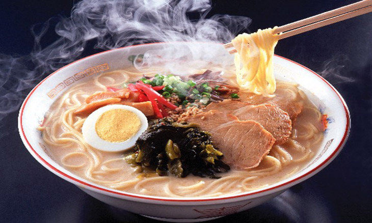
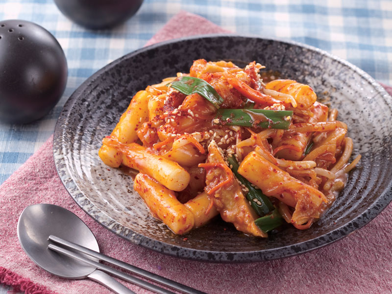

國外美食
拉麵（位於日本）
日本拉麵前身中華麵的麵條源自中國清朝陝西、山西的搷條麵，搷條麵又稱拉麵或坤麵。 清朝宣統時期薛寶辰（陝西長安人）所著《素食說略》中亦載有當時流行於陝西、山西的「搷條麵：其以水和麵，入鹽、鹼、清油揉勻，覆以濕布，俟其融合，扯為細條煮之，名為『搷條麵』」。 搷條麵為鹼水麵，中國在明代時使用了鹹水湖的湖水製麵。

辣炒年糕(位於韓國)
據說韓國辣炒年糕由來是朝鮮皇帝每逢正月必吃的一道料理，又稱「正月料理」， 這種炒年糕是由條狀年糕、肉、菜及調味汁製成，初期只簡單加入蔬菜與肉類，再以醬油拌炒，之後才演變為使用辣醬提味的方式。 也有人說最初的炒年糕（當時稱宮中炒年糕）是宮廷用作招待賓客的菜，因此是當時高檔菜的代表作。

火鍋（位於中國大陸重慶）
舊式的重慶火鍋通常被稱為老火鍋，因為最初在重慶碼頭聚集的船客與碼頭工人流動性很大， 火鍋中放置一井字形或十字形鐵架分成小格，客人各選各格，吃完就走， 火鍋底料更換不頻繁並反覆被使用，後來的客人還會經常在鍋中發現自己未點的菜式，因此被稱作老火鍋。